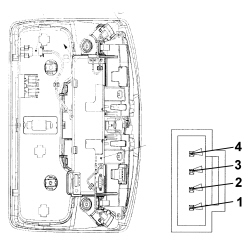

5580EC ULTRASOUND/ANTI-TILT MODULE CHECK
- Path
- Test > 55 ELECTRICAL EQUIPMENT > 5580 SPECIAL ACCESSORIES > 5580E ANTI-THEFT DEVICE > 5580EC ULTRASOUND/ANTI-TILT MODULE CHECK
- Kind
- test / check procedure
- Applies to
- all engines; all production periods
- Interactive page
- https://sloeber94.github.io/elrnDB-fCrm/en/#/194004758
Applies to: all engines; all production periods
CHECK TO BE PERFORMED | RESOLUTION IF THE CHECK IS NOT OK | |
|---|---|---|
1 | Connect the diagnostic instrument in Voltmeter mode with the positive terminal connected to Pin 1 and the negative earthed to Pin 2 of the volumetric sensor unit for the alarm. The direct battery voltage reading should be 12 Volts. Move on to Step 3 | Move on to Step 2 |
2 | Check in the under-dashboard junction unit whether fuse F39 has blown (it is the second from the top in the left-hand column) and replace. See B002 JUNCTION UNIT UNDER DASHBOARD The test can be considered over | Restore the power supply |
3 | Connect the positive probe to Pin 3 of the unit and the negative to Earth. Turn the key ON and ensure the reading is 12 Volts. Move on to Step 5 | Move on to Step 4 |
4 | Check in the under-dashboard junction unit whether fuse F49 has blown (it is in the centre in the right-hand column) and replace. See B002 JUNCTION UNIT UNDER DASHBOARD The test can be considered over | Replace the antilift sensors Op. 5580E50 ANTITHEFT DEVICE VOLUMETRIC SENSOR R R FOLLOWING ELECTRICAL CIRCUIT CHECK |
5 | Disconnect connector D from the Body Computer. Connect the diagnostic instrument in Ohmmeter mode between Pin 4 of the unit side connector and Pin 7 of connector D Body Computer side. Ensure the wiring is continuous and the earth is insulated | Restore continuity/insulation |
6 | Replace the antilift sensors Op. 5580E50 ANTITHEFT DEVICE VOLUMETRIC SENSOR R R FOLLOWING ELECTRICAL CIRCUIT CHECK |
- Courtesy light module control unit
Applies to: engines: 1.8, 2.2; all production periods

Applies to: all engines; all production periods
- Pin Out
Applies to: engines: 1.8, 2.2; all production periods
Pin | Function |
|---|---|
1 | + 30 |
2 | Earth |
3 | + 15 |
4 | A-BUS |